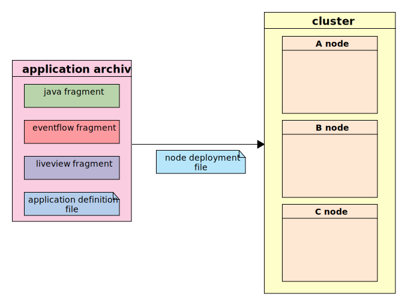

Cloud Software Group, Inc.
Cloud Software Group, Inc.Usage
- Build artifacts
- Packaging types
- Product installation
- Codeline structure
- Example project object model files ( pom.xml )
- Plugin prefixes
The following sections provides an introduction to the Event Processing (EP) Build Maven plugin.
Build artifacts
The overall goal is to build an application archive which can be deployed to a cluster. The application archive consists of one or more fragments plus an application definition file. A node deployment file is required to map the application archive to the runtime topology :

Packaging types
The maven plugin supports the following packaging types :
-
jar - Java jar
-
ep-java-fragment - Java fragment
-
ep-eventflow-fragment - EventFlow fragment
-
ep-liveview-fragment - LiveView fragment
-
ep-sw-fragment - Streaming Web flow fragment
-
ep-application - Application archive
One maven module ( or directory ) is able to build one of the above packaging types. Each module will typically build, unit test, install and deploy either a fragment or application archive, where the application archive will import the fragments.
Since the fragments and application archives are first class maven artifacts, then can be deployed and downloaded from a repository in the same way as any other maven artifact.
The maven plugin has been designed to require minimal configuration for most cases and yet allow for extensive configuration.
Product installation
The location of the product installation is product-group/product-artifact/product-version/ in a sibling directory to the local maven repository. Thus, with the default maven configuration, $HOME/.m2/product-group/product-artifact/product-version/ or $HOME/.m2/com.tibco.ep.sb.rt/platform_osxx86_64/10.4.0/>.
This can be overridden with the com.tibco.ep.ep-maven.product property or the value of the $TIBCO_EP_HOME environment variable.
This directory is used to install the product (if missing) and is used for administration commands.
Codeline structure
The recommend overall codeline structure is :
When maven is invoked ( either on the command line, from an IDE or from a continuous automation system ), the modules will be built and tested in the correct order. For example :
$ mvn install
[INFO] Scanning for projects...
[INFO] ------------------------------------------------------------------------
[INFO] Reactor Build Order:
[INFO]
[INFO] Java Fragment - hello world
[INFO] EventFlow Fragment - GoldyLocks
[INFO] Application Archive - local test
[INFO] DTM Examples top-level project object model
...
[INFO] ------------------------------------------------------------------------
[INFO] Building Java Fragment - hello world 3.0.0
[INFO] ------------------------------------------------------------------------
...
[INFO] ------------------------------------------------------------------------
[INFO] Building EventFlow Fragment - GoldyLocks 3.0.0
[INFO] ------------------------------------------------------------------------
...
[INFO] ------------------------------------------------------------------------
[INFO] Building Application Archive - local test 3.0.0
[INFO] ------------------------------------------------------------------------
...
[INFO] ------------------------------------------------------------------------
[INFO] Reactor Summary:
[INFO]
[INFO] Java Fragment - hello world ........................ SUCCESS [ 43.814 s]
[INFO] EventFlow Fragment - GoldyLocks .................... SUCCESS [ 14.852 s]
[INFO] Application Archive - local test ................... SUCCESS [ 23.580 s]
[INFO] DTM Examples top-level project object model ........ SUCCESS [ 0.004 s]
[INFO] ------------------------------------------------------------------------
[INFO] BUILD SUCCESS
[INFO] ------------------------------------------------------------------------
Example project object model files ( pom.xml )
The top-level pom.xml file is likely to simply list the contained modules :
<project xmlns="http://maven.apache.org/POM/4.0.0" xmlns:xsi="http://www.w3.org/2001/XMLSchema-instance"
xsi:schemaLocation="http://maven.apache.org/POM/4.0.0 http://maven.apache.org/xsd/maven-4.0.0.xsd">
<modelVersion>4.0.0</modelVersion>
<groupId>com.tibco</groupId>
<artifactId>dtmexamples</artifactId>
<version>1.0.0</version>
<packaging>pom</packaging>
<name>DTM Examples top-level project object model</name>
<modules>
<module>helloworld</module> <!-- java fragment -->
<module>goldylocks</module> <!-- EventFlow fragment -->
<module>localtest</module> <!-- application archive -->
</modules>
</project>
A java fragment module has a packaging type of «ep-java-fragment», a list the project dependencies and build rules.
<project xmlns="http://maven.apache.org/POM/4.0.0" xmlns:xsi="http://www.w3.org/2001/XMLSchema-instance"
xsi:schemaLocation="http://maven.apache.org/POM/4.0.0 http://maven.apache.org/xsd/maven-4.0.0.xsd">
<modelVersion>4.0.0</modelVersion>
<groupId>com.tibco.ep.dtmexamples.javafragment</groupId>
<artifactId>helloworld</artifactId>
<packaging>ep-java-fragment</packaging>
<version>3.0.0</version>
<name>Java Fragment - hello world</name>
<!-- common definitions for this version of StreamBase -->
<parent>
<groupId>com.tibco.ep.sb.parent</groupId>
<artifactId>ep-java-fragment</artifactId>
<version>10.4.0</version>
</parent>
<dependencies>
<!-- example java dependency -->
<dependency>
<groupId>junit</groupId>
<artifactId>junit</artifactId>
<scope>test</scope>
<version>4.12</version>
</dependency>
</dependencies>
<build>
<plugins>
<!-- maven plugin with all configurations defaulted -->
<plugin>
<groupId>com.tibco.ep</groupId>
<artifactId>ep-maven-plugin</artifactId>
<extensions>true</extensions>
</plugin>
</plugins>
</build>
</project>
This is sufficient to build the java fragment, unit test using junit on a default environment and install the fragment to the local maven repository for use by other modules.
Likewise, an EventFlow fragment module has a packaging type of ep-eventflow-fragment, a list of project dependencies and build rules.
<project xmlns="http://maven.apache.org/POM/4.0.0" xmlns:xsi="http://www.w3.org/2001/XMLSchema-instance"
xsi:schemaLocation="http://maven.apache.org/POM/4.0.0 http://maven.apache.org/xsd/maven-4.0.0.xsd">
<modelVersion>4.0.0</modelVersion>
<groupId>com.tibco.ep.dtmexamples.eventflowfragment</groupId>
<artifactId>goldylocks</artifactId>
<packaging>ep-eventflow-fragment</packaging>
<version>3.0.0</version>
<name>EventFlow Fragment - GoldyLocks</name>
<!-- common definitions for this version of StreamBase -->
<parent>
<groupId>com.tibco.ep.sb.parent</groupId>
<artifactId>ep-eventflow-fragment</artifactId>
<version>${sbrtVersion}</version>
</parent>
<dependencies>
<!-- test only dependencies -->
<dependency>
<groupId>com.tibco.ep.sb</groupId>
<artifactId>test-api</artifactId>
<version>10.4.0</version>
<scope>test</scope>
</dependency>
</dependencies>
<build>
<plugins>
<!-- maven plugin with all configurations defaulted -->
<plugin>
<groupId>com.tibco.ep</groupId>
<artifactId>ep-maven-plugin</artifactId>
<extensions>true</extensions>
</plugin>
</plugins>
</build>
</project>
This is sufficient to build the EventFlow fragment, unit test using SBUnit on a default environment and install the fragment to the local maven repository for use by other modules.
A TIBCO Streaming Web flow fragment module has a packaging type of ep-sw-fragment, a list of project dependencies and build rules.
<project xmlns="http://maven.apache.org/POM/4.0.0" xmlns:xsi="http://www.w3.org/2001/XMLSchema-instance"
xsi:schemaLocation="http://maven.apache.org/POM/4.0.0 http://maven.apache.org/xsd/maven-4.0.0.xsd">
<modelVersion>4.0.0</modelVersion>
<groupId>com.tibco.ep.dtmexamples.eventflowfragment</groupId>
<artifactId>my-sw-project</artifactId>
<packaging>ep-sw-fragment</packaging>
<version>3.0.0</version>
<name>Streaming Web Flow Fragment - my-sw-project</name>
<!-- common definitions for this version of StreamBase -->
<parent>
<groupId>com.tibco.ep.sb.parent</groupId>
<artifactId>ep-sw-fragment</artifactId>
<version>${sbrtVersion}</version>
</parent>
<build>
<plugins>
<!-- maven plugin with all configurations defaulted -->
<plugin>
<groupId>com.tibco.ep</groupId>
<artifactId>ep-maven-plugin</artifactId>
<extensions>true</extensions>
</plugin>
</plugins>
</build>
</project>
This is sufficient to build the Streaming Web flow fragment and install the fragment to the local maven repository for use by other modules.
The application archive is a little different since it depends on other fragments - these fragments can be from other builds in the current directory structure or be external dependencies. In the latter case, maven will download the appropriate version before using.
<project xmlns="http://maven.apache.org/POM/4.0.0" xmlns:xsi="http://www.w3.org/2001/XMLSchema-instance"
xsi:schemaLocation="http://maven.apache.org/POM/4.0.0 http://maven.apache.org/xsd/maven-4.0.0.xsd">
<modelVersion>4.0.0</modelVersion>
<groupId>com.tibco.ep.dtmexamples.applicationarchive</groupId>
<artifactId>localtest</artifactId>
<packaging>ep-application</packaging>
<version>3.0.0</version>
<name>Application Archive - local test</name>
<!-- common definitions for this version of StreamBase -->
<parent>
<groupId>com.tibco.ep.sb.parent</groupId>
<artifactId>ep-application</artifactId>
<version>10.4.0</version>
</parent>
<dependencies>
<!-- java fragment as a dependency -->
<dependency>
<groupId>com.tibco.ep.dtmexamples</groupId>
<artifactId>helloworld</artifactId>
<version>3.0.0</version>
<type>ep-java-fragment</type>
</dependency>
<!-- EventFlow fragment as a dependency -->
<dependency>
<groupId>com.tibco.ep.dtmexamples</groupId>
<artifactId>goldylocks</artifactId>
<version>3.0.0</version>
<type>ep-eventflow-fragment</type>
</dependency>
</dependencies>
<build>
<plugins>
<!-- maven plugin with all configurations defaulted -->
<plugin>
<groupId>com.tibco.ep</groupId>
<artifactId>ep-maven-plugin</artifactId>
<extensions>true</extensions>
</plugin>
</plugins>
</build>
</project>
Plugin prefixes
The maven documentation here references shortcut goals such as ep:help. For these to work, maven needs to know the mapping between the prefix and the actual package. This can be configured on the maven repository or in a local settings.xml file. For example :
<settings>
....
<pluginGroups>
<pluginGroup>com.tibco.ep</pluginGroup>
</pluginGroups>
....
</settings>
$ mvn ep:help
[INFO] Scanning for projects...
[INFO]
[INFO] ------------------------------------------------------------------------
[INFO] Building Java Fragment - hello world 3.0.0
[INFO] ------------------------------------------------------------------------
[INFO]
[INFO] --- ep-maven-plugin:1.0.0:help (default-cli) @ helloworld ---
[INFO] DTM Event Processing Maven Plugin 1.0.0
This plugin has 13 goals:
ep:administer-nodes
Administer nodes
....